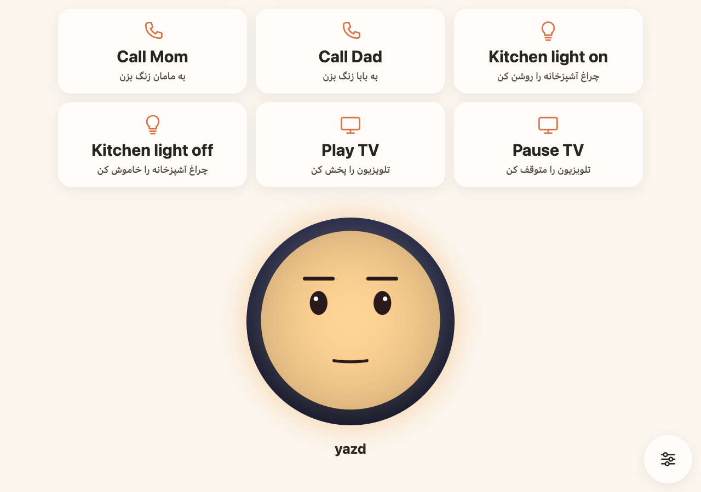
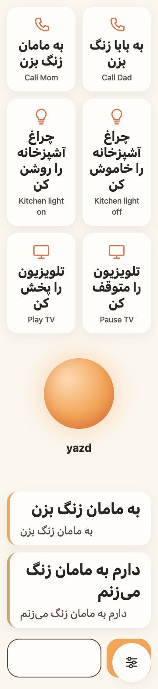
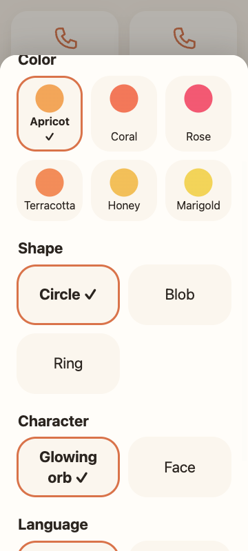

Open source · Voice first · Any language
yazd — An assistant that adapts to the person using it.
Speak a request in your own language. yazd answers out loud, shows captions, and changes how it speaks and looks when you ask it to.

Small screens put up specific walls
yazd is designed first for one reference user: an elderly Farsi speaker with near-total vision loss and limited dexterity. Each wall below is one he meets on an ordinary smartphone.
-
Vision
Icons, small text and on-screen confirmations cannot be read.
yazd confirms every action out loud, in one short sentence.
-
Mobility
Tapping small targets, typing and unlocking menus need steady hands.
Voice is the main input. On screen, every target is at least 88px.
-
Hearing
A spoken reply that is missed is gone.
Every reply is also captioned, in a size and contrast the person can change.
-
Language
Assistants and menus often assume English.
yazd replies in the language the user spoke. No prompt names a language.
Ask. It routes. It answers out loud.
-
Ask in your own language
Tap the companion once, or press Space or Enter, and speak. A pause ends the request, so nothing has to be held down. Shortcuts and a text box work too.
-
A specialized agent acts
An orchestrator routes the request to one sub-agent with its own tools. If the request is unclear, yazd asks one short question instead of guessing.
- Calls and messages
- Home lights
- TV and media
- Settings
- Time and day
- Clarifier
-
Spoken reply, with captions
The answer is spoken back. Captions show what was said and the reply, in the original language with an English line for helpers.

Actions on the outside world
- Phone calls and text messages. Contact names are resolved against a sample contact list, then no call or message is sent.
- Turning lights on and off.
- Playing, pausing and controlling the TV.
These tools only record the request and report success. Nothing leaves the server.
What actually happens
- Changing yazd's own settings. The change shows on screen right away.
- Telling the time and day, read from the server clock.
- Asking one clarifying question when a request is ambiguous.
- Speech recognition, translation for captions and spoken replies, through OpenRouter when the server has an API key.
Without an API key, the server replays recorded conversations, which only match the exact demo phrases.
Change it by asking
Four settings change by voice. Relative requests map to clear values: “slower” sets speech to 0.75×, “faster” to 1.25×, “bigger” sets captions to extra large, “smaller” to small. “Go back to normal” resets everything.
| Setting | Range | Default | What it changes |
|---|---|---|---|
| Speech rate | 0.5× to 1.5× | 1.0× | How fast replies are spoken. Pitch is preserved. |
| Caption size | Small, medium, large, extra large | Large | Caption text, from 24px up to 48px. |
| High contrast | On or off | On | Captions in light text on black instead of dark text on cream. |
| Silence wait | 0.8 s to 4 s | 1.5 s | How long yazd waits in silence before it treats the request as finished. |
Demo phrases, in Farsi: آهستهتر صحبت کن (“speak slower”) and برگرد به حالت عادی (“go back to normal”).
Or make it theirs on screen
A helper can open the personalize sheet from the round button in the corner. It closes with Escape or Done. Choices are saved in the browser.
- Name. What the companion is called, and what the talk button says.
- Color. Six warm hues: apricot, coral, rose, terracotta, honey, marigold.
- Shape. Circle, blob or ring.
- Character. A glowing orb or a face.
- Language. Shortcut labels in Farsi or English.

Add the ability your person needs
Every ability is a self-contained extension: an agent, its tools, and an optional
screen surface. Developers and caregivers clone the repo and add one. The recipe lives
in .kiro/steering/extensions.md, and in Kiro you pull it into a chat with
#extensions.
The recipe, in order
- Declare the tools and their typed inputs in the shared contracts.
- Register the agent with a system prompt and its tool list.
- Add one line to the router saying what the agent handles.
- Describe each tool with a JSON schema: required fields, enums, limits.
- Wrap tools that do real work, validating input before it runs.
- Wire the wrapper into the app. Real implementations are chosen there, by config.
- Put every user-facing string in the strings package.
- Add a screen surface only if the ability needs one.
- Record a replay fixture, so the ability works with no API key.
Each step starts with a failing test. The settings agent is the worked example in the recipe.
How Kiro was used
-
Specs
Requirements, design and tasks for the clock, settings agent, friendly failures, the TTS voice fix and the companion UI, in
.kiro/specs/. -
Steering
Product, structure, tech and UI design rules, loaded into every relevant session. The extensions recipe is a manual steering file.
-
Hook
After every spec task, a hook runs tests, lint and typecheck, so a broken task is caught right away.